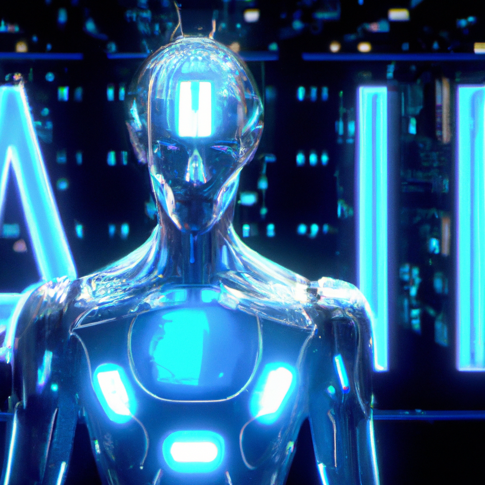

Future of AI
Artificial Intelligence (AI) has been making incredible advances in the last few years, and it's likely to continue making strides in the future. AI can now perform tasks that were once thought to be impossible, such as driving a car, playing games, and recognizing faces. AI is increasingly being used in the workplace, and its potential applications are endless. In this blog, I discuss the potential of AI to reshape the way we work, live, and interact with each other. I explore the potential of AI in areas such as healthcare, education, and finance, as well as its potential for creating new jobs and industries. Finally, I discuss the ethical implications of AI and the potential risks it poses to humanity.